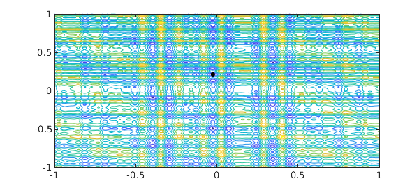
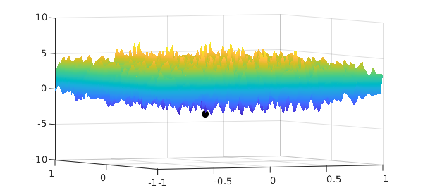

The SIAM 100-Dollar, 100-Digit Challenge
In February 2002, an article in SIAM News by Nick Trefethen set a challenge to solve ten problems each to ten digits of precision (the solution of each problem was a real number) [1]. One of the problems was to find the global minimum of the complicated function
f = @(x,y) exp(sin(50*x)) + sin(60*exp(y)) + sin(70*sin(x)) +...
sin(sin(80*y)) - sin(10*(x+y)) + (x.^2+y.^2)./4;
x = linspace(-1,1);
[xx, yy] = meshgrid(x);
surf(xx, yy, f(xx,yy)),
title('The complicated function', 'FontSize', 16)

Since the term $(x^2+y^2)/4$ grows away from $(0,0)$ while the other terms remain bounded, it can be shown that the global minimum occurs in $[-1,1]^2$ [2].
The function is complicated and oscillatory, but of rank $4$, as can be seen by rearranging its terms and using the identity $\sin(a+b) = \sin(a)\cos(b) + \cos(a)\sin(b)$.
g = chebfun2(f);
fprintf('Rank of function = %u\n', rank(g))
Rank of function = 4
For details about what we mean by the rank of a function see [3]. The minimum was found in [2] to 10,000 digits, and here are the first 16:
exact = -3.306868647475237; % minimum.
We can compute this minimum using Chebfun2. The minimum is correct to 13 digits.
Y = min2(g); fprintf('Computed global minimum = %1.16f\n', Y)
fprintf('Error in Chebfun2 minimum = %1.4e\n', abs(Y(1) -exact))
Computed global minimum = -3.3068686474747908 Error in Chebfun2 minimum = 4.4631e-13
Here is the full four-line code and how long it takes:
s = tic;
f = @(x,y) exp(sin(50*x)) + sin(60*exp(y)) + sin(70*sin(x)) + sin(sin(80*y)) -...
sin(10*(x+y)) + (x.^2+y.^2)./4;
g = chebfun2(f);
[Y, X] = min2(g);
t = toc(s);
fprintf('Total time taken = %1.4fs\n',t)
Total time taken = 0.7143s
Here is the plot of the minimum in a contour plot:
contour(g), hold on, plot(X(1), X(2), 'k.', 'markersize', 20), hold off

To see that the computed point is the global minimum we make the following plot:
plot(g), hold on, plot3(X(1),X(2),Y,'k.','markersize',40) zlim([-10 10]), view(-24.5,4)

References
-
Lloyd N. Trefethen, A 100-Dollar, 100-Digit Challenge, SIAM News, 35 (2002).
-
Folkmar Bornemann, Dirk Laurie, Stan Wagon and Joerg Waldvogel, The SIAM 100-Digit Challenge: A Study in High-Accuracy Numerical Computing, SIAM, 2004.
-
A. Townsend and L. N. Trefethen, An extension of Chebfun to two dimensions, SIAM Journal on Scientific Computing, 35 (2013), C495-C518.